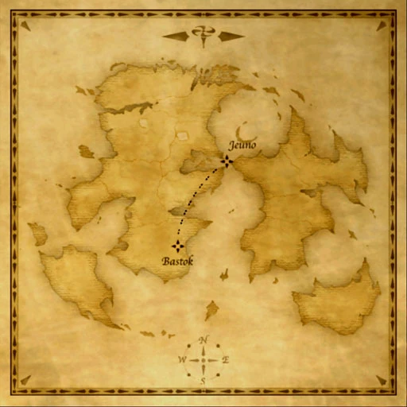

Description
Bastok-Jeuno Airship is an outdoor area in Airships.
Map

References
External references describe their own server or retail rules. Documented Zenith changes take precedence.
Map credits: Map 1 — HorizonXI Wiki. Original game maps © SQUARE ENIX; redrawn maps retain the credited authorship and license.

Additional level-75 reference
Adapted from Eden Wiki: Bastok-Jeuno Airship · Contributors and history · CC BY-SA 4.0. Revision 28371. Layout, links and optional background text adapted for Zenith.